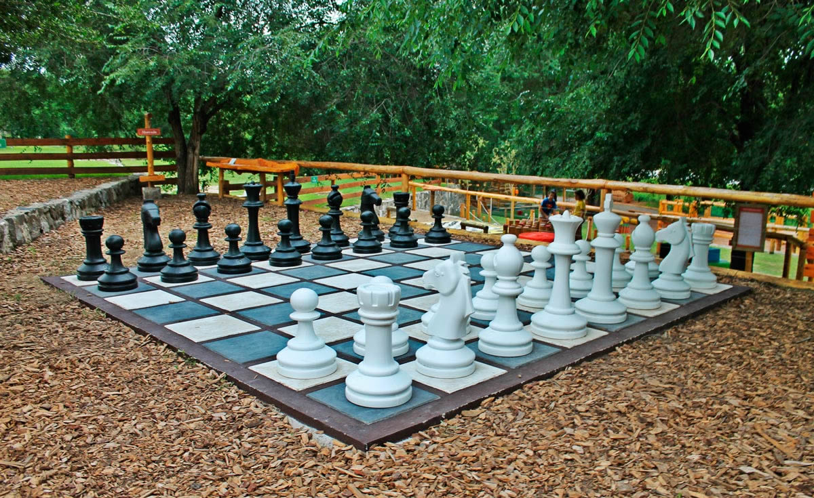
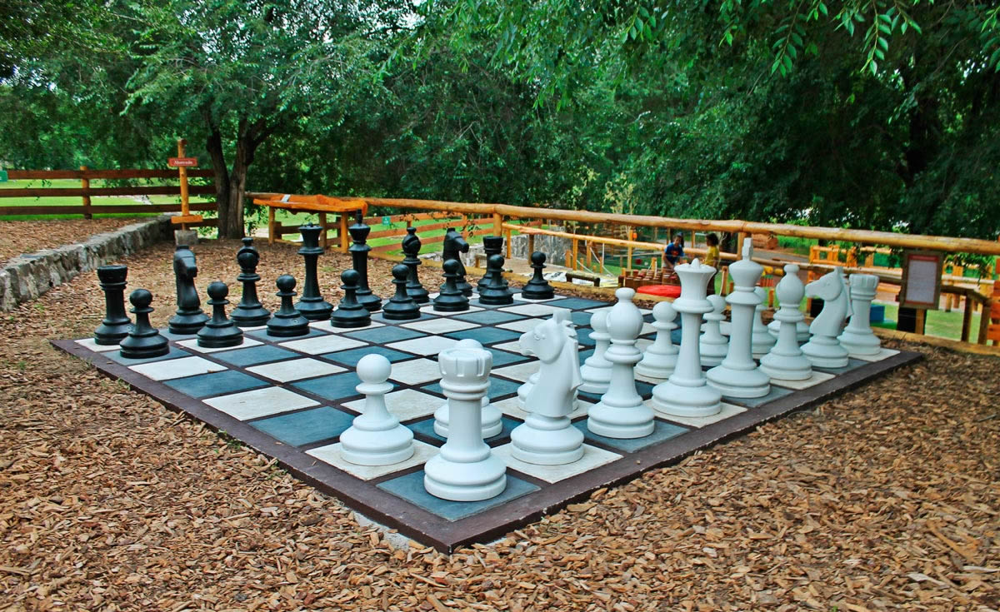

Parque Los Cocos
El Parque Los Cocos en Córdoba es un destino natural encantador situado en las Sierras Chicas, conocido por su ambiente tranquilo y su entorno pintoresco. Rodeado de árboles nativos y senderos bien mantenidos, el parque ofrece áreas de picnic, juegos para niños y espacios verdes ideales para relajarse y disfrutar en familia. Además, cuenta con miradores desde donde se pueden admirar vistas panorámicas de las sierras y el valle. Los visitantes pueden explorar sus caminos sinuosos que atraviesan la vegetación autóctona y disfrutar de la frescura del aire serrano, haciendo de este parque un lugar perfecto para escapar del bullicio de la ciudad y conectar con la naturaleza.


La Serranita
La Serranita es un encantador parque situado en Córdoba, Argentina, conocido por su ambiente natural y tranquilo. Rodeado de hermosos paisajes serranos, ofrece amplias áreas verdes ideales para el esparcimiento y el contacto con la naturaleza. El parque cuenta con senderos sinuosos que serpentean entre árboles frondosos y pequeños arroyos, creando un escenario perfecto para paseos relajantes y actividades al aire libre. Además, dispone de zonas de recreación para niños, bancos estratégicamente ubicados para descansar y contemplar el entorno, y áreas destinadas a la práctica deportiva y picnics familiares. La Serranita es un destino popular tanto para residentes locales como para turistas que buscan disfrutar de un ambiente sereno y rejuvenecedor en medio de la naturaleza cordobesa.
 
